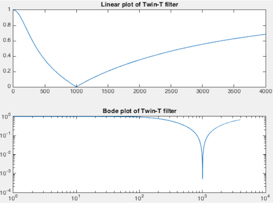
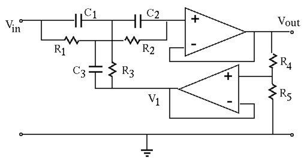

Next: Wien bridge Up: Chapter 6: Active Filter Previous: The Sallen-Key filters
The twin-T filter

The twin-T network is composed of two T-networks:
 and one
capacitor .
and one
capacitor .
When the output is open-circuit, i.e., , the frequency
response function of the twin-T network can be found to be
(see here):
 |
 |
||
|
(31) |
When this notch filter is used in a negative feedback loop of an amplifier, it becomes an oscillator.

The active twin-T filter
The bandwidth may not be narrow enough for most applications due to the small quality factor . To overcome this problem, an active filter containing two op-amp followers (with unity gain ) can be used to introduce a positive feedback loop as shown below:

Now the common terminal of the twin-T filter is no longer grounded,
instead it is connected a potentiometer, a voltage divider composed
of  and
and  , to form a feedback loop by which a fraction of the
output is fed back:
, to form a feedback loop by which a fraction of the
output is fed back:
The input and output of the twin-T network are respectively and
, and they are now related by the frequency response function
 of the twin-T network:
of the twin-T network:
|
|||
|
(36) |
|
|||
|
|||
|
|||
|
(38) |
It can be shown (see here)
that the frequency response function of this active twin-T filter is
|
|||
|
(40) |
and , the bandwidth
can be adjusted. In particular,
The bridged T filter
If in the RCR T-network the vertical capacitor branch is dropped, i.e., , the twin-T network becomes a bridged T network. Now we have , while the CRC T-network is still the same with , we get:
|
|
||
|
|||
|
(43) |
 , and express both the numerator and the
denominator in the canonical form as
, and express both the numerator and the
denominator in the canonical form as